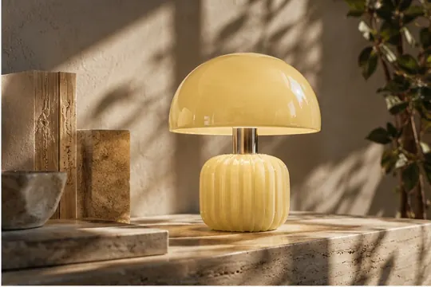

Design notes / Jocelyn Martinez
Reading the glass.
Three decisions shaped this project. Keep the lamp’s silhouette. Give the ribs a graphic counterpart. Let the viewer change the light independently of the finish.
Ivory, revisited.
The original room used warm light, gold stone and leaf shadows. The cream finish nearly disappeared into its setting. A cooler sill separates the same profile from the architecture, and reeded window glass echoes the fluted foot.


What else changed in the audit
- Composition
- Four photographs recurred across the original formats. The new set moves between architecture, touch, a fixed profile and glass at macro scale.
- Campaign
- Several early carousel frames repeated feed introductions. Six new frames move from room to silhouette to rib, then through illumination and finishes before returning to the room.
- Interface
- The earlier finish selector coupled each finish to one setting. The collection now offers nine consistent views with two independent choices.
- Presentation
- The earlier case placed many similar thumbnails together. The main case now pairs a decision with an example, while each channel has its own full-size proofs.
Identity development
Three ways to draw light.
A shadow can travel well beyond the object. The graphic needed to hold up after cropping on a poster and when reduced to a narrow carton label. These drawings test what survives at each size.

Design system
Type has three jobs.
Headlines establish the rhythm. Body copy explains the object. Codes and captions make it possible to compare editions across a shelf label, a screen and a letter.
- Barlow Condensed
- Where the light lands.
- DM Sans
- A smooth dome gathers a reflection. At the foot, the ribs break it into separate lines.
- IBM Plex Mono
- BR-02 / Ivory / Morning
Color in use
- MineralPaper and daylight
- InkType and structure
- CitronStudio signature
- AmberAfternoon edition
- WineEvening edition
Layout and interaction rules
- Grid
- Give the image the wider column for a campaign placement. Give two comparison photographs equal space and the same crop. Stack paired editorial images on narrow screens and keep finish names adjacent to their pictures.
- Type and spacing
- Use the condensed face for display lines and the wider sans for paragraphs. Keep working labels in sentence case. The shared style sheet defines gutters, section spacing, text colors, focus outlines and the local font files.
- Controls
- Label a swatch with its finish name. Mark a selected option in type or with a border. Keep the keyboard focus visible and reserve solid buttons for opening or completing a task.
- Photographs and artwork
- Keep the smooth dome, short metal neck and rounded, fluted foot in the same proportions. Campaign crops can change scale. Matched product comparisons keep the camera fixed. Set names, codes and headlines separately as editable type.
Outcome & next steps
From a mood to a choice.
The finished work connects a lighting identity to a campaign, a collection interface, three email letters and a print family. A reader can follow a photograph from the campaign to a particular finish and lighting condition.
The intended buyer is a design assumption. A next study would ask someone choosing a bedside lamp to compare two finishes in evening light. A physical sample, carton dummy and inbox trials would answer separate questions about the light, the folds and delivery.
A self-initiated fictional studio by Jocelyn Martinez. Product scenes and blank mockup environments were generated with AI. Typographic artwork and layouts are separate source files. The light studies illustrate art direction.
Return to the collection decision